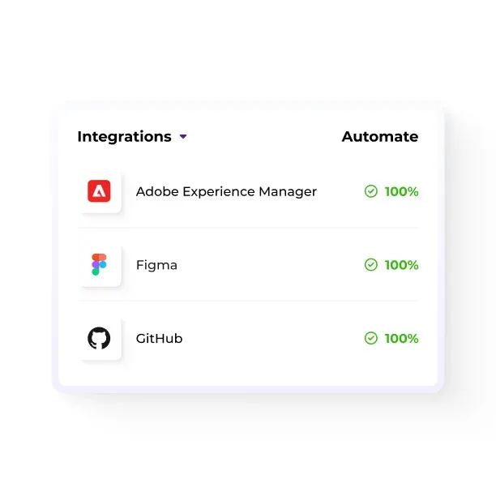

Definition
Mika Visibility is an educational and diagnostic product for B2B websites. This note is about translation management system on a multilingual site: one company, parallel language URLs, and the same product facts on each URL. GEO here means generative engine optimization, not geographic targeting. A high health finding never becomes an automatic growth finding.
Short answer
Treat translation management system as a consistency problem first. The company name, the product name, specifications, applications, claims, and the questions you actually answer have to match across languages. Which gland fits this cable and enclosure? should receive the same constraints on every alternate. Market depth can be added. The engineering fact cannot be quietly replaced.
Fields that must say the same thing
Compare six fields before you compare traffic. Company name. Product name, including the model code for cable gland. Specifications, especially ingress rating. Applications, named as enclosure entry rather than a vague sector word. Claims, including the condition in “the rating applies only with the stated cable range”. Question coverage: the buyer question is either answered, partial, or uncovered in that language.
English stays at the root. Chinese stays under /zh/. Do not add an /en/ prefix. Language labels on the homepage illustration include EN, 中文, Español, العربية, Русский, and Deutsch. Those labels are a picture of the idea, not a claim that every label already has a deep market site. Each language you do publish still carries independent SEO Health, SEO Growth, GEO Health, and GEO Growth.
The issue on the page
One business, several language URLs
Multilingual visibility is the same business remaining understandable in each language. The fields Mika compares are company name, product name, specifications, applications, claims, and question coverage. cable gland keeps one name. ingress rating keeps the same values. enclosure entry is not renamed into a vaguer market phrase. the rating applies only with the stated cable range keeps its conditions.
Market-specific intent still needs real depth. A buyer can ask Which gland fits this cable and enclosure? in another language with local constraints. The answer page should add that depth and link to the same evidence. It should not be a copied mirror of the home page with the menu translated and the table removed. Thin mirrors and copy spam are the failure mode, not a growth tactic.
Consistent context is a GEO concern as much as a search concern. GEO means generative engine optimization: whether a person can find a clear, supportable answer from the site itself. It is not geographic SEO. When language versions disagree, an answer product can blend them. The page becomes harder to quote. That is a loss of citation readiness, not a promise that any product will cite the site.
Signals that travel with the page
An XML sitemap can list each language URL and its alternates. It is a coverage hint. It does not force indexing, and it does not repair a page that disagrees with its alternate. Read the sitemap for mismatches: URLs in the file that canonicals point away from, and alternates that return an error.
Evidence for the rating applies only with the stated cable range is the datasheet, the operating note, or the standard named beside the sentence. Each language version needs a working link to that evidence. A claim that only the English page can support is not yet a bilingual claim. Citation readiness is the quality of being quotable without ambiguity. It is not a promise of placement in an answer product.
What to check
- Open the English and Chinese URLs for cable gland side by side and read ingress rating aloud. If one side is shorter, the fields do not match.
- Confirm reciprocal hreflang among the live canonicals, including a self-reference, with x-default on the English URL.
- Follow the in-language internal links from the hub to the product page so the alternate is not an orphan.
- Read the direct answer to “Which gland fits this cable and enclosure?” and check that the condition in “the rating applies only with the stated cable range” survived translation.
What this does not claim
This page does not guarantee search rankings, AI answer citations, or inclusion in AI Overviews, ChatGPT, Gemini, or any other answer product. Correct hreflang, a tidy /zh/ folder, and matching facts about cable gland make the site easier to understand. They are not a placement promise. Homepage sample counters are illustrative interface, not results.
A practical example
Example. The English root states enclosure entry beside a datasheet. The other language restates the application in broader words and links to a homepage instead of the sheet. The pages are alternates in the navigation and strangers in the facts. The useful next action is to align the six fields and make the evidence link work in both languages. A re-audit checks the alignment. It does not convert health into a growth score, and there is no blended overall score that could hide the gap.

FAQ
What should we do about translation management system?
Treat translation management system as a consistency problem first. The company name, the product name, specifications, applications, claims, and the questions you actually answer have to match across languages. Which gland fits this cable and enclosure? should receive the same constraints on every alternate. Market depth can be added. The engineering fact cannot be quietly replaced.
Which facts about cable gland must match?
Compare six fields before you compare traffic. Company name. Product name, including the model code for cable gland. Specifications, especially ingress rating. Applications, named as enclosure entry rather than a vague sector word. Claims, including the condition in “the rating applies only with the stated cable range”. Question coverage: the buyer question is either answered, partial, or uncovered in that language.
Does this guarantee rankings or AI citations?
This page does not guarantee search rankings, AI answer citations, or inclusion in AI Overviews, ChatGPT, Gemini, or any other answer product. Correct hreflang, a tidy /zh/ folder, and matching facts about cable gland make the site easier to understand. They are not a placement promise. Homepage sample counters are illustrative interface, not results.
Next step
Run a structured SEO + GEO audit to see health findings, growth gaps, and a blueprint you can act on.
Clearer entities, answers, evidence, and context make pages easier to understand and reference. Results in any answer product are not guaranteed.